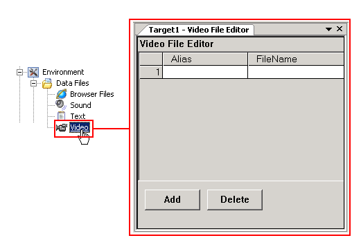

|
|
|
|
|
|
|
|

The Video File Editor adds video files to the target.
You must define the video's alias and file name when adding videos to a target:
Alias - The user-defined name for the video file. The alias name is used to select the video files in your project.
File Name - Displays the video file's extension and file name.
See section 19.1.1, About Video: Video Formats for a list of the supported video formats.
Video files added to the project are downloaded to the target along with the project during download.
You can choose one of the following options when adding Video files to a target:
Link - Links Video files to the project.
Copy into Project - Copies Video files into the project.
Adding a Video File to a project:
Click the Video node.
In the Video File Editor, click the Add button.
In the Open dialog box, select the Video file.
Enable or disable the Copy File(s) into project checkbox:
Enabled: Copies the selected files into the project.
Disabled: Links the selected files to the project.
Click the Open button to add the file to the project.
In the Video File Editor, select the row and click the Delete.
Click the Alias cell and type in the new name for the video file.
-or-
Click the File Name cell, click the ellipsis, and select the new video file.